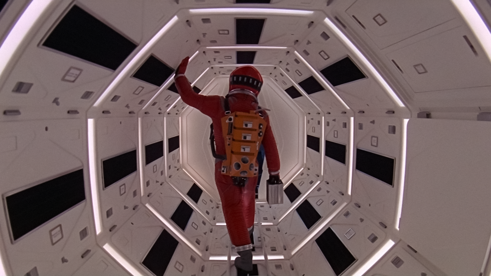
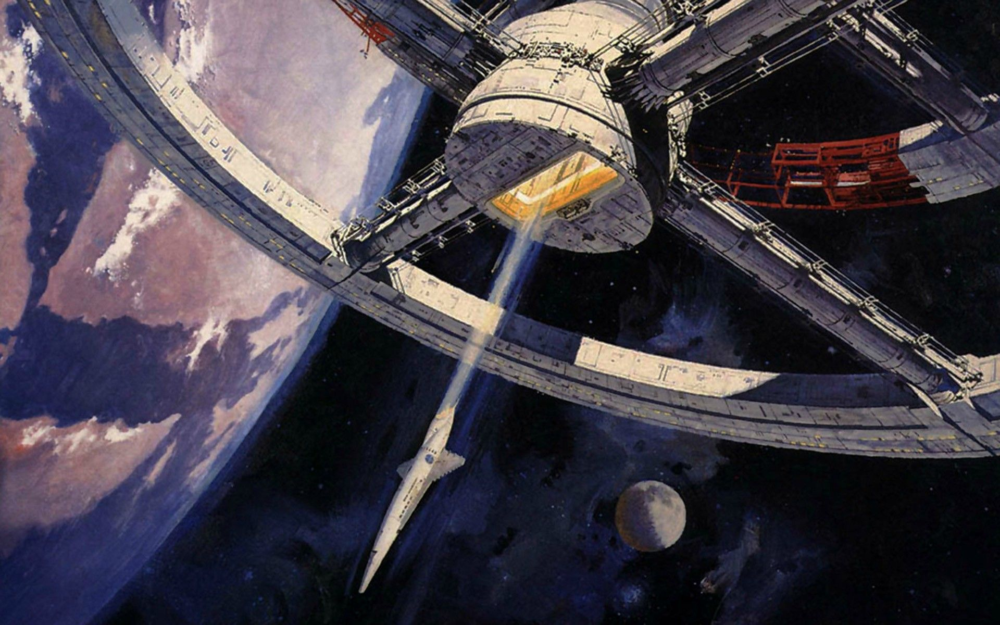
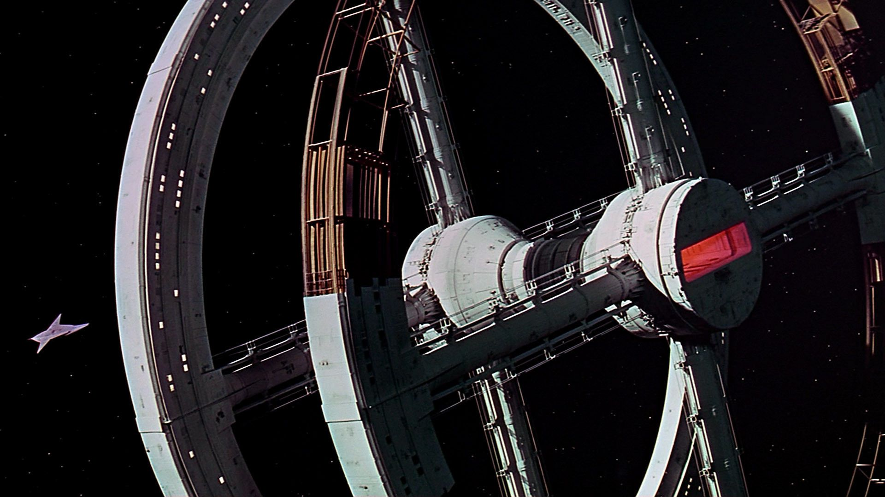

Η ταινία “2001: A Space Odyssey” είναι βρετανικής και αμερικανικής παραγωγής γυρισμένη στην Αγγλία το 1968 με σκηνοθέτη τον Στάνλεϊ Κιούμπρικ. Πρωταγωνιστούν ο Keir Dullea (Dr. David Bowman), ο Gary Lockwood (Dr. Frank Poole), William Sylvester (Dr. Heywood Floyd).
Η ταινία είναι βασισμένη στο μυθιστόρημα επιστημονικής φαντασίας “The Sentinel” του Άρθουρ Κλαρκ, ο οποίος σε συνεργασία με τον ίδιο τον Κιούμπρικ, ήταν και ο σεναριογράφος. Με αρκετά μεγάλη διάρκεια (143 λεπτά) και πλοκή που αγγίζει θέματα όπως η ανθρώπινη εξέλιξη, η ζωή έξω από τον πλανήτη μας και η τεχνητή νοημοσύνη ήταν πολύ προχωρημένη και πρωτοποριακή για την εποχή της και θεωρείται ακόμα και σήμερα η σημαντικότερη ταινία επιστημονικής φαντασίας όλων των εποχών. Αξιοσημείωτη είναι, επίσης, η εξαιρετική χρήση της μουσικής που σε συνδυασμό με τα οπτικά εφέ, τα οποία κέρδισαν Όσκαρ, μαγεύουν τον θεατή.
Το 1991, χαρακτηρίστηκε «πολιτιστικά, ιστορικά ή αισθητικά σημαντική» από τη Βιβλιοθήκη του Κογκρέσου των Ηνωμένων Πολιτειών και επιλέχθηκε να ενταχθεί στο Εθνικό Μητρώο Κινηματογράφου.
1. “Η Αυγή της Ανθρωπότητας”
Σε αυτό το κομμάτι της ταινίας παρακολουθούμε την εξέλιξη του ανθρώπινου είδους. Σαν πιο κρίσιμο σημείο τούτης της εξέλιξης είναι η ανακάλυψη και η χρήση των εργαλείων. Ένας πίθηκος πρόγονός μας συνειδητοποιεί, μέσω της εμφάνισης ενός μυστηριώδη μονολίθου, τη δύναμη που μπορεί να έχει ένα κόκκαλο, τόσο ως εργαλείο όσο και ως όπλο. Είναι η στιγμή που αντιλαμβάνεται πως στον πλανήτη έχει έρθει να παίξει ρόλο όχι συμπληρωματικό και ασήμαντο, αλλά πρωταγωνιστή.
Ο πίθηκος πετάει από τη χαρά και τον ενθουσιασμό του το κόκκαλο στον αέρα και ο Κιούμπρικ εκεί το μεταμορφώνει σε ένα διαστημόπλοιο θέλοντας να δείξει πως τα επιτεύγματα του ανθρώπου είναι αιώνια και δεν σταματούν ποτέ, αλλά και δείχνοντας πως η ανακάλυψη της διαστημικής τεχνολογίας είναι ισάξιας σημασίας με την ανακάλυψη του εργαλείου ή της φωτιάς. Και αποκαλύπτει έτσι με μια σκηνή τη δύναμη και τη συνέχεια της ανθρώπινης εξέλιξης.
2. “Αποστολή στο Δία”
Το τέλος του πρώτου μέρους είναι η γέφυρα για το δεύτερο. Εδώ, βλέπουμε πως όπως ο άνθρωπος χρησιμοποίησε τα εργαλεία για να εξερευνήσει τη Γη, έτσι και τώρα με τα σύγχρονα εργαλεία του θα εξερευνήσει το απέραντο διάστημα. Στο δεύτερο μέρος γνωρίζουμε έναν εκ των βασικών πρωταγωνιστών της ταινίας, που δεν είναι άνθρωπος, μα ο υπολογιστής τεχνητής νοημοσύνης με το όνομα HAL 9000.
Μέσα από τους διαλόγους και τις σχέσεις του υπολογιστή με το υπόλοιπο πλήρωμα του διαστημοπλοίου “Discovery 1”, οι δύο πρωτοπόροι σεναριογράφοι, ο Κιούμπρικ και ο Κλαρκ, θέτουν τα ζητήματα απόκτησης συνείδησης και συναισθημάτων από τα ρομπότ και τις μηχανές και ως ποιο σημείο αυτό είναι αποδεκτό και ασφαλές. Το θέμα αυτό απασχόλησε πλήθος ταινιών και βιβλίων τα χρόνια που ακολούθησαν, αλλά -ειδικά τα τελευταία χρόνια- το ζήτημα δεν εμφανίζεται μόνο στη μυθοπλασία, αλλά απασχολεί και ερευνητές και επιστήμονες.
3. Ο Δίας και Πέρα από το Άπειρο

Στο τρίτο μέρος, ο Dr. Bowman -που ήταν ο μοναδικός επιζών του “Discovery”, φτάνει στον προορισμό του, στον Δία. Υπάρχει και εδώ ένας μονόλιθος, όπως και στο πρώτο μέρος της ταινίας, και αυτό μας δείχνει το ενδεχόμενο εξωγήινης ύπαρξης. Γράφεται και λέγεται, όμως, πως οι μονόλιθοι ίσως να συμβολίζουν και τον Θεό.
Η απόβαση του Bowman στον πλανήτη ξεδιπλώνει υπαρξιακά ανθρώπινα ζητήματα, τον φόβο και την εξερεύνηση του αγνώστου, τη δύναμη και την συνειδητοποίηση της ζωής και του θανάτου, η επαφή του ανθρώπου με το θάνατό του με ολόκληρο το σύμπαν.
Οι ερμηνείες και οι εξηγήσεις που έχουν δοθεί για το φινάλε της ταινίας, αλλά και για τις αλληγορίες καθ’ όλη τη διάρκειά της είναι αμέτρητες και ποικίλες, τόσο από τους κριτικούς κινηματογράφου όσο και από τους πολλούς σινεφίλ που λάτρεψαν την “Οδύσσεια” από την πρώτη μέρα της κυκλοφορίας της ως και σήμερα, 55 χρόνια μετά. Ο ίδιος ο Κιούμπρικ σε διάφορες συνεντεύξεις του τόνιζε πως το να υπάρχουν διάφορες εκδοχές και ερμηνείες για την ταινία ήταν μέσα στους στόχους του.
Όπως και να χει, πρόκειται για μια εξαιρετική ταινία, αριστουργηματική τόσο σε επίπεδο καθαρής ψυχαγωγίας όσο και τέχνης και ανθρωπιστικής και πολιτιστικής αξίας. Έθεσε ζητήματα πανανθρώπινα και εξαιρετικής σημασίας σε εποχή που κανείς δεν μπορούσε να διανοηθεί.